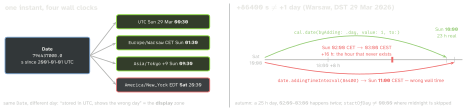

ios-platform · folio
In one line: A Date is an instant: a Double of seconds since
2001-01-01 00:00 UTC — no zone, no calendar, no locale. Calendar +
TimeZone + Locale are the lens that turns it into a human day and does the arithmetic;
formatters are the (costly) bridge to strings — POSIX/ISO 8601 for machines,
localized styles for people.
Download PDF Print view LaTeX source


How it works
- Date —
timeIntervalSinceReferenceDate(2001) /timeIntervalSince1970(Unix);Date.now(iOS 15). Comparing and storing instants needs no zone. JS sends ms epochs — divide by 1000. - Calendar carries
timeZone,locale,firstWeekday:date(byAdding:value:to:),dateComponents(_:from:to:),startOfDay(for:),isDateInToday..current= user settings (maybe Buddhist/Japanese); pinCalendar(identifier: .gregorian)for business rules. - Days between = day delta of the two
startOfDays, neverinterval / 86400.DateIntervalfor overlap/contains. - DateFormatter — ICU-backed, expensive to create (a Time Profiler classic in
cellForRow) →static let. Thread-safe to format/parse (iOS 7+) if no one mutates it. User-facing:dateStyle/timeStyleorsetLocalizedDateFormatFromTemplate("MMMd"), never a raw pattern. - Fixed format (wire, logs) =
locale = en_US_POSIX+ explicittimeZone; else a 12-hour or non-Gregorian user setting breaksHH/yyyyparsing. - ISO8601DateFormatter — default
.withInternetDateTime;.123Zreturns nil unless.withFractionalSeconds(iOS 11).JSONDecoder .iso8601also rejects fractions →.custom. - FormatStyle (iOS 15) — value types, cached by the system:
d.formatted(date: .abbreviated, time: .shortened),.dateTime.weekday(.wide).hour(),.iso8601,.relative(presentation: .named); parse withDate(str, strategy: .iso8601). - RelativeDateTimeFormatter (iOS 13) — “3 h ago”, “yesterday” (
dateTimeStyle = .named); still a formatter: cache it, set calendar. - Server vs device — wire = instants (UTC ISO 8601 or epoch); render in the user’s zone. Local rules (“9:00 every day”, birthdays, all-day events) =
DateComponents+ a zone identifier (Europe/Warsaw), never a fixed offset (+02:00changes with DST).
Testing — inject time
Date() inside logic = untestable + flaky across CI zones. Inject now: () -> Date (or a Clock, Swift 5.7 / iOS 16) and a Calendar with a fixed TimeZone + Locale; test the DST days and 23:59 → 00:00 explicitly. Elapsed time: ContinuousClock (counts sleep) / SuspendingClock (pauses) or CACurrentMediaTime() — never Date() - start: NTP or the user moves the wall clock.
Example
enum Formatters { // build ONCE, reuse
static let wire: DateFormatter = {
let f = DateFormatter()
f.locale = Locale(identifier: "en_US_POSIX") // fixed fmt
f.timeZone = TimeZone(identifier: "UTC")
f.dateFormat = "yyyy-MM-dd'T'HH:mm:ssXXXXX" // yyyy!
return f }()
}
var cal = Calendar(identifier: .gregorian)
cal.timeZone = TimeZone(identifier: "Europe/Warsaw")!
let next = cal.date(byAdding: .day, value: 1, to: now)!
let days = cal.dateComponents([.day],
from: cal.startOfDay(for: a), to: cal.startOfDay(for: b)).day
now.formatted(date: .abbreviated, time: .shortened) // UI
let d = try Date("2026-03-29T08:30:00Z", strategy: .iso8601)Traps
+ 86400= “24 h later”, not “tomorrow” — 23/25 h days (diagram).YYYY= week-based year: some late-December days print next year.DD= day of year,hh= 12-hour. Useyyyy/dd/HH.- Fixed format without
en_US_POSIX— works on your phone, fails for a user with 12-hour time or a Buddhist calendar. .dateTime/dateStyleoutput on the wire — localized, unparsable.- Mutating
dateFormat/localeof a shared formatter while another thread formats — configure once, then read-only. - Off-by-one “expires in N days” near midnight — compared instants, not day boundaries in the user’s zone.
- Client-side time gates (trial, rate limit) — the user can roll the clock back; enforce on the server.
Pattern letters (Unicode TR35)
yyyy | calendar year | YYYY | week-based year |
MM · MMM | 03 · Mar | dd · DD | day of month · of year |
HH · hh | 0–23 · 1–12 | a | AM/PM |
mm · ss | minute · second | SSS | fraction |
E · EEEE | Sun · Sunday | XXXXX | Z or +02:00 |
Remember
Instant in, instant out; the zone is chosen at the edge. Add days with a Calendar, durations with a Clock, and never write YYYY.